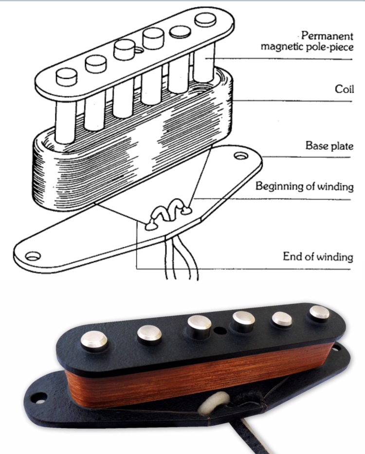

Pastillas single coil

Empezando con esta clasificación de tipos de pastillas, lo primero que
nos encontramos es con este modelo que fue el primero que se lanzó al mercado.
Las guitarras que más comúnmente utilizan este tipo de pastillas suelen
ser Telecaster y Fender Stratocaster.
Tienen la característica de conseguir un sonido bastante brillante, redondo y muy cálido.
El único problema que presenta es que, cuando estamos tocando cualquier pieza,
notaremos que se produce un determinado zumbido o ruido muy constante con volúmenes elevados.
En otras palabras; que podría llegar a estropear la sonoridad de la propia pieza.
Si no tenemos demasiados conocimientos sobre la guitarra,
podemos llegar a pensar que somos nosotros los que la estamos tocando mal,
cuando realmente es el tipo de pastilla lo que está interfiriendo en la propia pieza.